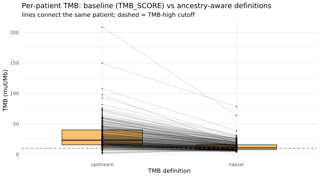
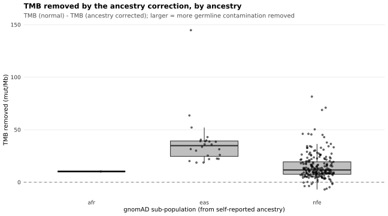
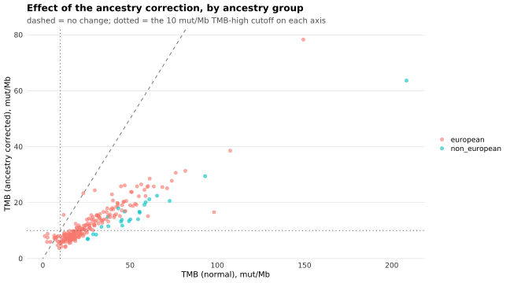

Last updated: 2026-09-25
Checks: 7 0
Knit directory:
attend_aneuploidy/analysis/
This reproducible R Markdown analysis was created with workflowr (version 1.7.2). The Checks tab describes the reproducibility checks that were applied when the results were created. The Past versions tab lists the development history.
Great! Since the R Markdown file has been committed to the Git repository, you know the exact version of the code that produced these results.
Great job! The global environment was empty. Objects defined in the global environment can affect the analysis in your R Markdown file in unknown ways. For reproduciblity it’s best to always run the code in an empty environment.
The command set.seed(20260622) was run prior to running
the code in the R Markdown file. Setting a seed ensures that any results
that rely on randomness, e.g. subsampling or permutations, are
reproducible.
Great job! Recording the operating system, R version, and package versions is critical for reproducibility.
Nice! There were no cached chunks for this analysis, so you can be confident that you successfully produced the results during this run.
Great job! Using relative paths to the files within your workflowr project makes it easier to run your code on other machines.
Great! You are using Git for version control. Tracking code development and connecting the code version to the results is critical for reproducibility.
The results in this page were generated with repository version 53d4271. See the Past versions tab to see a history of the changes made to the R Markdown and HTML files.
Note that you need to be careful to ensure that all relevant files for
the analysis have been committed to Git prior to generating the results
(you can use wflow_publish or
wflow_git_commit). workflowr only checks the R Markdown
file, but you know if there are other scripts or data files that it
depends on. Below is the status of the Git repository when the results
were generated:
Ignored files:
Ignored: .Rhistory
Ignored: .Rproj.user/
Ignored: .mcr_cache/
Ignored: data/aneu_scores.csv
Ignored: data/attend_barcodes.csv
Ignored: data/attend_data.xlsx
Ignored: data/clinical_gianlu_data.csv
Ignored: data/cnv_annotations/
Ignored: data/gistic/
Ignored: data/hrd_scores.csv
Ignored: data/msi_scores.csv
Ignored: data/old2_gistic/
Ignored: data/old_gistic/
Ignored: data/seg/
Ignored: data/tcga_2013/
Ignored: data/tmb_scores.csv
Ignored: data/variant_annotations/
Ignored: gistic2.sif
Ignored: output/clean_data/
Ignored: output/gistic_input/
Note that any generated files, e.g. HTML, png, CSS, etc., are not included in this status report because it is ok for generated content to have uncommitted changes.
These are the previous versions of the repository in which changes were
made to the R Markdown (analysis/00-methods.Rmd) and HTML
(docs/00-methods.html) files. If you’ve configured a remote
Git repository (see ?wflow_git_remote), click on the
hyperlinks in the table below to view the files as they were in that
past version.
| File | Version | Author | Date | Message |
|---|---|---|---|---|
| html | 53d4271 | sceriff0 | 2026-09-25 | :wrench: site building |
| Rmd | 395a71c | bolt3x | 2026-09-24 | :sparkles: Report 13 — recurrent copy number against immune-evasion gene function |
| Rmd | 1b75829 | bolt3x | 2026-09-21 | :sparkles: A second aneuploidy cut, because 0.1 was never measured against one |
| Rmd | 0c4840a | bolt3x | 2026-09-14 | :art: One vocabulary, one order, and a page that says why a figure is missing |
| Rmd | 4c9d280 | bolt3x | 2026-09-14 | :bug: The data-driven panel could only find MMRp-high loci, and Q1/Q2 answered with the wrong instruments |
| Rmd | 0348325 | bolt3x | 2026-09-13 | :art: AS High / AS Low, arcsine + t-test on the score, no n=, arms back to red/light blue |
| Rmd | c2471cf | bolt3x | 2026-09-13 | :sparkles: Answer the two CNA questions in the field’s own figures |
| Rmd | 793a8f2 | bolt3x | 2026-09-07 | :recycle: Reorder the site 00-11, split 07, fold concordance into 01, add ProMisE |
| html | 39279fb | sceriff0 | 2026-09-01 | :wrench: rebuilt |
| Rmd | fe030a0 | bolt3x | 2026-08-17 | :bug: Report 07’s oncoplots were skipped by a gate that could not say why |
| Rmd | 6e6af27 | bolt3x | 2026-08-17 | :recycle: Switch the CN clustering metric to Euclidean — 1 - Pearson was discarding the quiet cluster |
| Rmd | a68533f | bolt3x | 2026-08-17 | :bug: Report 09 drew its clustering matrix, not TCGA Fig. 1a — display the genome |
| Rmd | f77f7e8 | bolt3x | 2026-08-17 | :art: Repalette the figure system on Tol vibrant; fix the silently-dead highlight |
| Rmd | 628db09 | bolt3x | 2026-08-14 | :art: Standardize the figure system across every report |
| html | ed3a227 | sceriff0 | 2026-08-13 | :wrench: first site |
| Rmd | 1592d06 | bolt3x | 2026-08-13 | :sparkles: Add report 06-response, fix duplicate chunk labels, renumber 07-09 |
| Rmd | 809ba92 | bolt3x | 2026-08-13 | :recycle: Hyphenate every report filename and fix the source-code link |
Question. Why is each analysis choice in this pipeline the choice it is? Cohort. None of its own; the fitted panels below use all patients on the master. Reads. attend_master_joined, plus data/nassar/ when a reference cohort is present. Out of scope. Results. Every figure that answers a biological question lives in a numbered report; this file carries only the justification behind how those figures are made.
This file collects every justification in the pipeline: why a distance metric, why a correction, why a threshold. It is read once, not once per report. Operational recipes — how to run a tool on the cluster — live in runbooks/ instead, and the derivation of any individual figure stays inline in the report that draws it.
The master is loaded here only because two of the justifications below are quantitative: the ancestry correction is fitted, so its coefficients and effect are shown rather than asserted.
master <- get_master() |> add_molecular_classes()
have_master <- !is.null(master)Kandoth et al. (Nature 2013) Suppl. Methods S2 names no metric or linkage for the copy-number clustering. It does name 1 − Pearson / Ward for its mRNA and methylation clusterings, and this pipeline previously borrowed that pair on those grounds. That borrowing was wrong, and the reason is a property of copy-number data rather than a matter of taste.
Correlation distance is undefined for a flat
profile. A copy-number-quiet tumour has no alteration at any
significant peak, so its profile has zero variance and its correlation
with every other sample is undefined; cluster_arm_matrix()
has to drop such samples rather than invent a distance for them. TCGA’s
own published cluster 1 is the quiet cluster — mean
|log2| 0.0043, against 0.216 for cluster 4 — so a correlation metric
discards most of the one cluster it would most need to recover, and the
heatmap loses the large pale block the paper’s Fig. 1a plainly has.
Measured on TCGA UCEC 2013, whose answer is published — 365 tumours,
TCGA’s own hg19 segments and 79 published peaks, both partitions
burden-ordered and scored against CNA_CLUSTER_K4:
| distance | clustered | published cluster 1 retained | ARI | diagonal |
|---|---|---|---|---|
| 1 − Pearson | 281 / 365 | 7 of 86 | 0.222 | 41.1% |
| Euclidean | 365 / 365 | 86 of 86 | 0.423 | 64.7% |
Euclidean loses no tumours, recovers the quiet cluster completely, nearly doubles the adjusted Rand index, and separates TCGA’s serous-like group cleanly (published cluster 4 → recomputed cluster 4 at 79/93, with no leakage into clusters 1–3). Under Euclidean a flat sample is not undefined; it sits near the origin, which is the correct geometry for “no alteration”.
So the pair is Euclidean + Ward.D2, set via cnv_method / cnv_dist in attend_classes.R and passed to cluster_arm_matrix(). It remains the only distance/linkage combination the pipeline uses. 09-tcga2013-fig1a re-runs the comparison above on every knit, so this is a claim the site keeps checking rather than one it asserts once.
Clustering copy-number profiles produces k unlabelled clusters. TCGA never had to decide which one was serous-like: with 373 tumours and histology in hand, cluster 4 was visibly 94% serous. ATTEND has no such label, so the call has to be inferred from the copy-number data itself — and that inference step is not part of TCGA’s methodology. Nothing about the clustering below departs from TCGA; only this labelling step is ours.
The obvious rule — pick the cluster with the largest mean |value|, i.e. the most altered one — turns out to answer the wrong question. “Most altered” is not “most serous-like”, and on thresholded features the two come apart: an undirected score rewards a deletion-dominated cluster just as much as the amplification-driven profile that actually characterises serous-like disease.
This report therefore scores clusters directionally: only concordant events count — gains at amplification peaks, losses at deletion peaks. It is the same principle attend_scna$panel already applies to the pre-specified locus panel in 10-recurrent-cna (a deletion at MYC must not score as serous-like).
⚠️ Both calls are computed and printed, and a [DISAGREE] flag is raised when they differ. If they agree on ATTEND, the directional correction changed nothing here and the result is a confirmation. Read that flag before drawing any conclusion from the cluster labels.
10-recurrent-cna answers two questions the clinical collaborators asked in order, and they are different kinds of question. Answering both with the same instrument is what the report used to do, and it is why its answer to the second one could not be read.
“Are there recurrent CNAs in MMRd aneuploidy-high?” is the question GISTIC 2.0 was written for: it scores each locus by frequency × amplitude into a G-score, compares it to a permuted background, and returns q-values per peak (Mermel et al., Genome Biol 2011). Its output figure — the G-score along the linearised genome, amplifications one way, deletions the other, with a significance line — is the convention every reader of this literature has seen since Beroukhim et al. (Nature 2010), and it is Fig. 1 of TCGA UCEC 2013, the paper this pipeline already reproduces elsewhere.
The pipeline ran five GISTIC runs and drew
none of that. It showed ASCETS arm-level frequencies, a
ClassifyCNV segment pileup, and a peak-call frequency mirror — all
correct, none of them the figure the question is asked in. The G-score
panels are now drawn from the stratum’s own run via
find_gistic_files(dir = ...), with the cutoff configured
once as attend_cnv$gistic$fdr_cutoff so the chromosome
plot, the bubble plot and the co-plot cannot disagree on the same page
about which peaks are significant.
⚠️ Which run’s files a report reads is now named, not
sorted. find_gistic_files() used to glob
data/gistic/ recursively and take the first match, so the
pooled run was selected only because all sorts before
mmr*. A run folder named earlier would have repointed
report 07’s clustering and report 10’s focal overlay at a nine-patient
stratum with nothing failing. attend_cnv$gistic$pooled_dir
names it; test_find_gistic_run.R pins it, with an
adversarial folder that sorts first.
“Are they the same ones that recur in MMRp aneuploidy-high?” asks for agreement. The permutation tests in Part 3 are difference tests: they can reject sameness, never support it. A null there means we could not show they differ, and at n = 9 that null is close to guaranteed whatever the truth is — so reporting it as the answer to question 2 would let low power read as a positive finding, the exact inversion the report’s own asymmetry rule (presence is informative, absence is not) exists to prevent.
Three agreement instruments are therefore reported before the tests, scaling from coarse to fine:
| Instrument | Unit | What agreement looks like |
|---|---|---|
| Jaccard of the five runs’ peak sets | membership | a stratum shares peaks with the pooled run |
coGisticChromPlot(), the two runs back to back |
G-score amplitude by position | peaks at the same loci, similar height |
scna_concordance_plot() — per-peak frequency, one group
against the other |
per-peak frequency | points on the diagonal; rho inside the range random splits of the same patients reach |
The scatter is the one that answers the question as asked: one point per pooled-run peak, its frequency in MMRd-high against MMRp-high, with the diagonal drawn. Both frequencies come from the pooled run’s per-sample calls, so the two axes share one background model — the peak-discovery-vs-per-sample-call separation Part 3 already rests on. The difference tests keep their place afterwards as the formal endpoint, under the two inference families.
Three rules keep the two answers honest. Recurrence is a GISTIC call, not a frequency cut: question 1 reads the union of the pooled and MMRd-high runs’ peaks and calls a locus recurrent only at q <= the configured cutoff on the MMRd-high run, because aneuploidy-high tumours clear “altered in half of them” on burden alone. Question 2 is conditional: its table keeps only question 1’s recurrent loci and scores them in MMRp-high with an interval for each group. Spearman’s rho has no fixed benchmark: zero-frequency peaks and arm-level peak correlation inflate it and n ≈ 9 deflates it, so it is read against rho between random splits of the same patients (the ceiling “the same” reaches at this n) and against MMRp-low (a floor). The panel permutation does not control burden either; a random-panel control matched on amplification and deletion counts sits beside it.
The finding these reports serve — high aneuploidy, reduced immune infiltrate, less benefit from checkpoint blockade — is the endometrial-specific, trial-based instance of Davoli et al. (Science 2017), who showed across 12 tumour types that aneuploidy correlates with reduced cytotoxic-immune markers and with worse survival on checkpoint blockade, and that SCNA level predicted immune infiltration better than mutational load. Two details of theirs bear directly on how this pipeline is built: the immune signature was predicted mainly by arm- and chromosome-level SCNAs while focal SCNAs predicted proliferation — so the two resolutions in report 10’s Part 1 answer different questions and are both kept — and their aneuploidy score is arm-level, the same family as the ASCETS score used here and as Taylor et al. (Cancer Cell 2018).
Each subsection names one step of 07-molecular-classification and states what it takes from Kandoth et al. Suppl. Methods S2 and what is an ATTEND addition. Read it once; the reports themselves carry only their own derivations.
Follows: Suppl. Methods S2 exactly — thresholded CN in GISTIC significant peaks, hierarchical clustering. Differs: DRAGEN WES .seg rather than SNP6; Euclidean / Ward.D2 (S2 leaves the CN metric unspecified but uses this pair for mRNA/methylation); the cascade reads a single cut (k_cnv in attend_classes.R), while the k-sweep heatmap shows a range of cuts around it; and the integrated-class and aneuploidy-score annotation bars are ATTEND additions, not Fig. 1a elements.
Follows: the Fig. 1a legend exactly. TCGA describe the figure as “SCNAs in each tumour (horizontal axis) plotted by chromosomal location (vertical axis)” — the whole genome, on a continuous colour scale. That is not the matrix they clustered, and the paper does not claim it is: Suppl. Methods S2 clusters thresholded copy number restricted to significant peaks. Two matrices, one figure, both from the same GISTIC run.
So report 07 clusters all_thresholded.by_genes.txt
inside the significant peaks (load_gistic_thresholded())
and draws all_data_by_genes.txt
genome-wide and continuous (load_gistic_continuous()), with
the columns split and coloured by the peak-based clusters. Drawing the
clustering matrix instead — which is what this report used to do —
yields a few hundred peak genes on a five-step colour scale:
genome-ordered, but not the genomic landscape, and not
continuous. The clustering is unchanged by this, and GISTIC is still
required, because the clustering feature is still TCGA’s.
The rule generalises past this report: the matrix that answers a question and the matrix that shows it need not be the same matrix, and forcing them to be the same is what made this figure wrong. What must be shared is the partition — the clusters drawn are the clusters computed, never a re-clustering of the display values.
Differs: nothing in kind; the display genes are ATTEND’s own GISTIC output rather than SNP6 probes, so the vertical resolution is gene-level by cytoband rather than probe-level.
TCGA fixed a single k (4). This panel is an ATTEND diagnostic: it exposes the whole cut spectrum on the Fig-1a canvas so the k = 4 parity cut used by the cascade can be judged against its neighbours, under the Euclidean/Ward metric.
This is an ATTEND QC, not a TCGA figure: TCGA characterised cluster 4 as the highest-SCNA/aneuploidy group but did not run this label-vs-independent-score check. It exists to prove our burden-based CN-high label isn’t circular with the aneuploidy score.
Follows: the per-sample priority stratification of their Fig. 2b — substitution/POLE → MSI → copy-number cluster; CN-high = cluster membership. Differs: POLE omitted (ATTEND has no POLE-ultramutated cases), so the cascade starts at MMRd; and MMRd is called by MMR IHC alone (TCGA used MSI/MLH1).
This validates the property Kandoth et al. reported (cluster 4 ≈ 90% TP53-mutant) rather than assuming it. We do not gate the serous call on TP53 (that would be the “and” rule); TP53 enrichment is the independent confirmation the cluster maps to TCGA’s serous-like group.
Follows: their finding that CN-high/serous-like carries the highest SCNA burden and lowest mutation rate, MSI the highest TMB (Fig. 1–2). Differs: per-definition TMB panels are an ATTEND addition (ancestry-aware recompute), absent from TCGA.
Tumour-only TMB is inflated by residual germline variants, and — because gnomAD’s reference is Euro-skewed — the inflation is ancestry-dependent (Nassar et al., Cancer Cell 2022). The ATTEND MAFs carry gnomAD v4.1 per-sub-population allele frequencies, which is what makes a correction possible without matched normals.
ATTEND is sequenced tumour-only, so leftover germline variants inflate TMB, and because germline allele frequencies differ between ancestries that inflation is ancestry-dependent (Nassar et al., Cancer Cell 2022). The pipeline therefore carries two definitions and never silently picks one:
| Reported name | Column | What it is |
|---|---|---|
| TMB (normal) | tmb__TMB_SCORE | the upstream tumour-only score, as delivered |
| TMB (ancestry corrected) | tmb__TMB_nassar | the same score after the ancestry recalibration |
Two further columns, tmb__TMB_robust and tmb__TMB_matched, exist on the master because the recalibration is fitted on top of robust. They are intermediates: tmb_defs_present() cannot return them, so no figure can show them. How the recalibration works is in How the Nassar et al. recalibration actually works, below.
Every definition is re-binarised at the same 10 mut/Mb cutoff by tmb_class_of(), so panels that differ only in definition differ only in who crossed the cut. The ancestry-corrected column stays all-NA until attend_ancestry$clinical_col is set, and panels that would be empty are skipped rather than drawn blank.
Getting from the delivered score to the reported corrected one passes through two intermediates, computed in 01-data-integration and living on the master, but never plotted, faceted, or labelled anywhere:
The reported ancestry-corrected column is then the paper’s actual method: an ancestry-specific regression recalibration TMB = m·TMB_robust + b (European vs non-European), applied on top of robust. Its coefficients (attend_tmb_nassar$coef) default to identity, so until values fit on TCGA WES are supplied this column equals robust — the published Oncopanel numbers are panel-specific and do not transfer to exome data.
tmb_defs_present() cannot return the intermediates, so no report can reintroduce them into a figure by accident. An unfiltered recompute is also used internally to calibrate the exome denominator; it is not emitted, because it would simply duplicate the baseline. The whole recompute lives in R with no upstream re-run — see attend_classes.R::tmb_variant_table() and apply_nassar_recalibration().
It helps to be precise about what Nassar et al. (Cancer Cell 2022) did, because our nassar column reproduces it and the distinction from the other variants is subtle.
The problem. In tumor-only sequencing there is no matched normal, so inherited (germline) variants are mixed in with somatic ones. TMB should count only somatic mutations, so pipelines remove germline by filtering out variants that are common in the population (looked up in gnomAD). But gnomAD is ancestry-skewed — its v2.1 exomes are ~57k European vs ~8k African. A variant that is common in African ancestry but rare in the (Euro-heavy) reference is not recognised as germline, survives the filter, and is miscounted as a somatic mutation. The net effect: tumor-only TMB is inflated, and the inflation is larger for non-European patients — who were then over-classified as TMB-high, a label that (in their data) did not predict immunotherapy response outside European ancestry.
Their method has two distinct steps. Do not conflate them:
Germline filter (variant level). Exclude any variant whose maximum population allele frequency across all gnomAD sub-populations (maxPOPAF, i.e. grpmax) exceeds 0.1%. This is a fixed, ancestry-agnostic filter — it drops a variant if it is common in any population. This step is exactly our robust variant (grpmax ≥ 0.001). It removes most, but not all, of the ancestry-driven inflation.
Ancestry regression recalibration (sample level) — the headline contribution. This is not another filter. Using cohorts that had both tumor-only and matched tumor-normal (“paired”) TMB as ground truth, they fit a linear regression of the true paired TMB on the tumor-only TMB, separately for European and non-European patients: \[\text{TMB}_{\text{paired}} \;=\; m_{\text{group}} \cdot \text{TMB}_{\text{tumor-only}} \;+\; b_{\text{group}}\] The slope \(m\) and intercept \(b\) therefore encode, per ancestry group, how much the tumor-only estimate over- (or under-) shoots the truth. To recalibrate a new sample you apply its group’s coefficients: \(\text{TMB}_{\text{corrected}} = m_{\text{group}} \cdot \text{TMB}_{\text{tumor-only}} + b_{\text{group}}\). Because \((m, b)\) differ between European and non-European, the same tumor-only TMB is corrected by a different amount depending on ancestry — that is precisely how the method removes the residual ancestry bias that the fixed filter (step 1) leaves behind.
Two supporting details. (a) Ancestry was inferred genetically — principal- component analysis of common germline SNPs called from the sequencing reads — not from self-reported race. (b) The coefficients were fit and validated against matched tumor-normal as the gold standard.
How our nassar column maps to this — and where it differs.
| Nassar step | Our implementation |
|---|---|
| germline filter maxPOPAF ≤ 0.1% | robust (grpmax ≥ 0.001) — identical in spirit |
| regression TMB = m·TMB + b, per ancestry, on top of the filtered TMB | apply_nassar_recalibration() on top of robust |
| ancestry via genetic PCA | self-reported clinical ancestry (attend_ancestry) — a coarser proxy; swap in EthSEQ/somalier genetic ancestry later |
| coefficients fit on paired tumor-normal, panel-specific (e.g. Oncopanel v3 European m=1.094, b=−1.94) | default identity (m=1, b=0) — those published numbers are panel-specific and do NOT transfer to whole-exome, so nassar == robust until you fit WES coefficients |
| gnomAD v2.1 + TOPMED | gnomAD v4.1 (newer, larger, less Euro-biased) |
To make nassar genuinely faithful for ATTEND (whole-exome): fit the regression on TCGA WES — compute paired-WES TMB and tumor-only-WES TMB (tumor-only simulated by dropping the normal and applying the same robust filter), label European vs non-European, then
coefs <- fit_nassar_coefficients(tcga_ref) # ref has paired_tmb, tumor_only_tmb, group
attend_tmb_nassar$coef <- coefs # paste into code/attend_classes.RUntil then, nassar deliberately equals robust rather than showing a spurious correction. (Sources: Nassar et al., Cancer Cell 2022, full text.)
tmb_recomp <- if (have_master) tmb_defs_present(master) else character(0)
if (have_master && length(tmb_recomp) >= 2) {
# Per-patient TMB across recomputed definitions + reclassification vs the cutoff.
long <- master |>
select(pid, all_of(unname(tmb_recomp))) |>
pivot_longer(all_of(unname(tmb_recomp)), names_to = "tmb_col", values_to = "tmb") |>
mutate(def = factor(names(tmb_recomp)[match(tmb_col, tmb_recomp)], levels = names(tmb_recomp)),
tmb = suppressWarnings(as.numeric(tmb))) |>
filter(!is.na(tmb))
print(
ggplot(long, aes(def, tmb)) +
# Deliberately NOT attend_box(): this is a paired design — each point must sit at the
# same x as its patient's connecting line, so the points cannot be jittered. Every
# definition is measured on the whole cohort, so the box is supported at any n.
geom_boxplot(outlier.shape = NA, fill = attend_neutral, width = 0.6) +
geom_line(aes(group = pid), alpha = 0.15) +
# jitter_width = 0: a paired design, so each point must stay at its patient's x or it
# detaches from its own connecting line. highlight_points() replaces the bare
# geom_point() so the polipo overlay appears here too.
highlight_points(long, "def", "tmb", jitter_width = 0, base_size = 0.7,
base_alpha = 0.4, base_const = "black") +
geom_hline(yintercept = attend_thresholds$tmb, linetype = 2, colour = "grey40") +
labs(title = "Per-patient TMB: baseline (TMB_SCORE) vs ancestry-aware definitions",
subtitle = paste0("lines connect the same patient; dashed = TMB-high cutoff; n = ",
dplyr::n_distinct(long$pid), " patients"),
x = "TMB definition", y = "TMB (mut/Mb)") +
attend_theme()
)
# How many patients are TMB-high under each definition (the reclassification).
reclass <- long |> group_by(def) |>
summarise(n = sum(!is.na(tmb)),
tmb_high = sum(tmb >= attend_thresholds$tmb, na.rm = TRUE),
pct_high = round(100 * tmb_high / n, 1), .groups = "drop")
knitr::kable(reclass, caption = paste0("TMB-high (>= ", attend_thresholds$tmb,
" mut/Mb) count per definition — the ancestry-driven reclassification"))
} else {
note_skip("Ancestry-corrected TMB not on the master yet — rebuild report 1 with ",
"the gnomAD-annotated MAFs synced into data/variant_annotations/.")
}
| def | n | tmb_high | pct_high |
|---|---|---|---|
| upstream | 234 | 219 | 93.6 |
| nassar | 234 | 123 | 52.6 |
The diagnostic the whole correction exists for: how much TMB the correction removes, broken down by ancestry. Each point is one patient’s TMB (normal) − TMB (ancestry corrected) in mut/Mb — the amount attributed to residual germline contamination.
This is the plot that shows whether the bias is real in this cohort. Nassar et al. predict systematically larger removals in non-European groups, because gnomAD’s non-European allele-frequency reference is sparser and more germline variants survive an undifferentiated filter. A flat distribution across sub-populations means either the cohort is too homogeneous to show it, or the correction is not doing anything.
Sub-populations come from mapping the self-reported clinical ancestry column onto gnomAD codes (attend_ancestry); patients whose label does not map are NA and dropped, so group sizes here can be much smaller than the cohort.
anc <- if (have_master) ancestry_by_pid(master) else NULL
if (!is.null(anc) && all(c("tmb__TMB_SCORE","tmb__TMB_nassar") %in% names(master))) {
g <- master |>
transmute(pid,
normal = suppressWarnings(as.numeric(`tmb__TMB_SCORE`)),
corrected = suppressWarnings(as.numeric(`tmb__TMB_nassar`)),
removed = normal - corrected) |>
inner_join(anc, by = "pid") |>
filter(!is.na(removed))
if (nrow(g) > 0) {
ggplot(g, aes(subpop, removed)) +
# Sub-populations are the smallest groups in the pipeline — the note above says group
# sizes here "can be much smaller than the cohort" — so the mark is chosen per group.
attend_box(g, x = "subpop", y = "removed", points = FALSE) +
highlight_points(g, "subpop", "removed", base_size = 1.1, base_alpha = 0.55,
base_const = "black") +
geom_hline(yintercept = 0, linetype = 2, colour = "grey50") +
labs(title = "TMB removed by the ancestry correction, by ancestry",
subtitle = "TMB (normal) - TMB (ancestry corrected); larger = more germline contamination removed",
x = "gnomAD sub-population (from self-reported ancestry)",
y = "TMB removed (mut/Mb)") +
attend_theme()
} else note_skip("No patients with both TMB definitions and a mapped ancestry.")
} else {
note_skip("Need the clinical ancestry column (attend_ancestry$clinical_col = '",
attend_ancestry$clinical_col, "') and tmb__TMB_nassar on the master ",
"for the by-ancestry view.")
}
tmb__TMB_nassar = m_group · tmb__TMB_robust + b_group, with (m, b) per ancestry group (European vs non-European). Which coefficients are applied is set by attend_tmb_nassar$active_source:
The published values (per OncoPanel version): European v3 m=1.094, b=−1.94 (v2 0.994, −2.12; v1 0.989, −2.18); Non-European v3 m=0.895, b=−1.29 (v2 0.840, −1.71; v1 0.821, −1.71). To use them, set attend_tmb_nassar$active_source <- “oncopanel_v3” and re-knit.
To fit your own (the WES-correct path): build a reference cohort with matched paired (tumor-normal) TMB, tumor-only TMB (simulated with the same robust/grpmax 0.1% filter), and an ancestry group column, drop it in data/nassar/ (any reference.tsv/.csv), re-knit to fit, paste the printed coefficients into attend_tmb_nassar$coef, and set active_source = “custom”. The panels below render the recalibration effect whenever the active coefficients are non-identity.
nc <- nassar_coef_table() # active coefficients + identity flag
ref_cfg <- attend_tmb_nassar$reference
ref_dir <- here("data", ref_cfg$dir)
ref_f <- if (dir.exists(ref_dir))
list.files(ref_dir, pattern = utils::glob2rx(ref_cfg$glob), full.names = TRUE, recursive = TRUE) else character(0)
if (length(ref_f) > 0) {
ref <- tryCatch(
if (grepl("\\.csv$", ref_f[1])) readr::read_csv(ref_f[1], show_col_types = FALSE)
else readr::read_tsv(ref_f[1], show_col_types = FALSE),
error = function(e) { note_skip("nassar reference unreadable: ", conditionMessage(e)); NULL })
if (!is.null(ref)) {
fitted <- fit_nassar_coefficients(ref, paired = ref_cfg$paired,
tumor_only = ref_cfg$tumor_only, group = ref_cfg$group)
cat("Fitted from", basename(ref_f[1]), "— paste into attend_tmb_nassar$coef:\n")
cat(sprintf(" european = list(m = %.4f, b = %.4f)\n", fitted$european$m, fitted$european$b))
cat(sprintf(" non_european = list(m = %.4f, b = %.4f)\n", fitted$non_european$m, fitted$non_european$b))
}
} else {
note_skip("No reference cohort in ", ref_dir, " — reporting the active coefficients only.")
}NOTE: No reference cohort in /hpcnfs/home/ieo7660/workflowR/attend_aneuploidy/data/nassar — reporting the active coefficients only.if (grepl("^oncopanel", nc$source)) {
cat("WARNING: active_source = '", nc$source, "' — OncoPanel-derived published coefficients\n",
"applied to WES robust TMB. Off-scale approximation (slope maps OncoPanel->WES-truth,\n",
"not WES->WES-truth); prefer fitting on WES via the reference path.\n", sep = "")
}WARNING: active_source = 'oncopanel_v3' — OncoPanel-derived published coefficients
applied to WES robust TMB. Off-scale approximation (slope maps OncoPanel->WES-truth,
not WES->WES-truth); prefer fitting on WES via the reference path.knitr::kable(nc$table, digits = 4,
caption = paste0("Active Nassar coefficients — source: ", nc$source,
" (identity = ", nc$identity, "; identity means nassar == robust)"))| group | m | b |
|---|---|---|
| european | 1.094 | -1.94 |
| non_european | 0.895 | -1.29 |
What the correction actually does to each patient, on the two reported definitions. TMB (normal) on the x-axis, TMB (ancestry corrected) on the y-axis, one point per patient, coloured by ancestry group.
How to read it: the dashed diagonal is no change — a point on it was unaffected. Points below it had TMB removed. The dotted lines are the 10 mut/Mb TMB-high cutoff on each axis, so the off-diagonal quadrants they carve out are the patients whose TMB-high/low call changed. Those are the only patients for whom the choice of definition changes any downstream figure, and the table counts them per ancestry group.
If the recalibration coefficients are still identity, this plot still shows the effect of the germline filter itself — the correction chain from the delivered score to the reported corrected one — which is the comparison every other report is drawing.
need <- c("tmb__TMB_SCORE", "tmb__TMB_nassar")
anc <- if (have_master) ancestry_by_pid(master) else NULL
if (have_master && all(need %in% names(master)) && !is.null(anc)) {
grp <- anc |>
mutate(group = ifelse(subpop %in% attend_tmb_nassar$european_subpops,
"european", "non_european")) |>
distinct(pid, group)
eff <- master |>
transmute(pid,
normal = suppressWarnings(as.numeric(`tmb__TMB_SCORE`)),
corrected = suppressWarnings(as.numeric(`tmb__TMB_nassar`))) |>
inner_join(grp, by = "pid") |>
filter(!is.na(normal), !is.na(corrected))
if (nrow(eff) > 0) {
print(
ggplot(eff, aes(normal, corrected, colour = group)) +
geom_abline(slope = 1, intercept = 0, linetype = 2, colour = "grey50") +
# jitter_width = 0: both axes are measured values, so any jitter would move a patient
# off its own coordinates. Coloured by ancestry group, with polipo drawn over it.
highlight_points(eff, "normal", "corrected", base_colour = "group",
jitter_width = 0, base_size = 1.6, base_alpha = 0.6) +
geom_hline(yintercept = attend_thresholds$tmb, linetype = 3, colour = "grey40") +
geom_vline(xintercept = attend_thresholds$tmb, linetype = 3, colour = "grey40") +
labs(title = "Effect of the ancestry correction, by ancestry group",
subtitle = paste0("dashed = no change; dotted = the ", attend_thresholds$tmb,
" mut/Mb TMB-high cutoff on each axis",
if (nc$identity) " | recalibration coefficients are identity, so this is the germline filter alone" else ""),
x = "TMB (normal), mut/Mb", y = "TMB (ancestry corrected), mut/Mb",
colour = NULL) +
attend_theme()
)
reclass_n <- eff |> group_by(group) |>
summarise(n = n(),
high_normal = sum(normal >= attend_thresholds$tmb),
high_corrected = sum(corrected >= attend_thresholds$tmb),
changed_call = sum((normal >= attend_thresholds$tmb) !=
(corrected >= attend_thresholds$tmb)),
.groups = "drop")
knitr::kable(reclass_n, caption = paste0(
"TMB-high (>= ", attend_thresholds$tmb, " mut/Mb) reclassification between the two ",
"definitions, by ancestry group. changed_call = patients whose high/low call differs."))
} else note_skip("No patients with both TMB definitions and a mapped ancestry group.")
} else {
note_skip("Need tmb__TMB_SCORE, tmb__TMB_nassar and an ancestry column on the master ",
"to show the correction effect.")
}
| group | n | high_normal | high_corrected | changed_call |
|---|---|---|---|---|
| european | 209 | 194 | 103 | 91 |
| non_european | 25 | 25 | 20 | 5 |
Every threshold and column name the reports read is declared in code/attend_classes.R, never inline in a report. The entries that govern the copy-number and TMB methods above:
| Object | Governs |
|---|---|
| attend_cnv | CNV sources, the arm table, and the pileup amplitude split |
| attend_tcga_levels | integrated-class labels and their display order |
| attend_tmb_recompute | germline-filter threshold, gnomAD columns, counted variant classes |
| attend_tmb_nassar | recalibration coefficients, the active source, the reference-cohort glob |
| attend_ancestry | self-reported ancestry to gnomAD sub-population map; set clinical_col |
| attend_pole | POLE hotspots and TMB cutoff, kept unwired (ATTEND has no POLE cases) |
The arm-boundary table is data/arm_boundaries_hg38.tsv, derived from UCSC hg38 cytoBand centromeres; set attend_cnv\(build and attend_cnv\)arm_table to work in hg19. The clustering parameters cnv_method, cnv_dist, k_cnv and k_sweep are declared there too rather than at the top of report 07 — a parameter this file discusses and another file applies has to be visible to both.
Aneuploidy score is the ASCETS arm-level SCNA burden read from data/ascets/: the fraction of evaluable chromosome arms called altered, with arms below ASCETS’ breadth-of-coverage threshold (LOWCOV) excluded from the denominator rather than counted as unaltered.
Patients are split at attend_thresholds$aneuploidy = 0.1 into aneuploidy-high and aneuploidy-low by aneuploidy_class_of(). The cut is a configured constant, not a cohort quantile, so it does not move when the cohort grows. Patients without an ASCETS score are NA and are dropped from class comparisons.
0.1 was never measured against an alternative. It is a configured constant that replaced an earlier median split, and nothing in this pipeline ever asked what a different constant would do — which means the cut has been, until now, an untested assumption sitting under every aneuploidy result on the site.
So there are two: attend_thresholds\(aneuploidy = 0.1 and attend_thresholds\)aneuploidy_alt = 0.2, returned as a pair by aneu_cuts(), and every aneuploidy-keyed figure is drawn at both. The first stays the primary: a bare add_molecular_classes() derives it, the master’s aneuploidy_class column carries it, and the per-group GISTIC runs on disk were prepared from it. The second is drawn beside it so a reader can see which results depend on the threshold and which do not.
The mechanism is one helper, add_aneuploidy_cuts(), which returns the patient frame once per cut with aneuploidy_class — and, on request, scna_group — re-derived at each, plus an ordered as_cut_lab for the facet strip. Figures therefore gain a facet rather than a second copy of their code. That is the point: two call sites drift, and this variable has drifted before (see the level-order note under the aneuploidy classes). code/tests/test_aneuploidy_cuts.R pins that the second block is genuinely re-derived rather than a relabelled copy of the first — the failure that would publish one result twice under two labels and read as “the threshold does not matter”.
Raising a cut can only demote a patient from high to low, never the reverse, so the two classifications are nested and the movers are exactly the patients scoring between the cuts. Reports print that count rather than leaving it implicit. Setting aneuploidy_alt to NULL collapses the whole site back to a single cut with no other edit.
⚠️ The GISTIC runs are a 0.1-cut product. scna_group_token() turns the MMR × aneuploidy groups into the run folder names under data/gistic/, and those runs were prepared from the primary cut. Every report that reads a per-group run — 10-recurrent-cna above all — therefore reports the primary cut only, and says so, until the runs are regenerated at the second cut (code/prep_gistic_group_segs.R, then runbooks/gistic.md). A figure that splits the pooled matrix in memory, such as report 12’s heatmaps, has no such constraint.
One overlay group is drawn on top of the base colouring by highlight_points(), which partitions the data so no patient is plotted twice:
#0077BB).It is drawn on every report that plots per-patient points, with no per-report opt-out. Marking one sample is only useful if a reader can locate it in each distribution it appears in; a report that quietly omits it looks identical on the page to one that never carried it.
The overlay colour is the one hue in the palette that no semantic scale may claim, because highlight points are drawn on top of boxes filled with the MMR, aneuploidy, TP53 and response colours — a highlight sharing a hex is invisible on exactly the box it exists to mark.
21S188 is a sequencing barcode, while
most figures are built from the master and keyed on pid.
The configured ids are therefore expanded through the barcode→pid and
image→pid crosswalks before matching, so the overlay resolves in every
id space. Before that resolution existed the match failed silently and
the mark simply did not appear.
A second group, cohort (the multi-modal subset with
IHC or imaging data, in yellow), was retired. It covered roughly 16 of
~40 patients, so it read as a second competing fill rather than as a
mark, and it encoded data availability — which the
master already carries as its in_* membership columns and
01-data-integration already draws
as a set diagram.
The cohort restriction is is_mmrd(), which reads the IHC MMR call: loss of one or more mismatch-repair proteins on staining. That is the criterion the TCGA cascade puts at the top, and the one used throughout this pipeline.
MSI-high by NGS is a correlate, not a criterion. It agrees with the IHC call in most patients and is reported alongside it, but it never defines the cohort — restricting on it instead would silently swap the population between reports. Patients with no MMR IHC call are excluded rather than assumed proficient.
Everything below is read from attend_master_joined, the one-row-per-patient table written by 01-data-integration and loaded here through read_intermediate() — never by a hard-coded .csv or .parquet path.
That report translates each modality’s native identifier onto pid, collapses to one row per patient (numeric columns averaged, others first-non-NA), and prefixes columns with the source dataset: gianlu__ clinical, aneu__ ASCETS, tmb__ TMB, hrd__, msi, ihc. Mutation status is the exception — the MAF is never mean-collapsed, so TP53_pathogenic and panel_pathogenic are derived per patient by pathogenic_by_patient() and joined on.
Column names and thresholds are read from attend_cols and attend_thresholds (code/attend_classes.R); chunks guarded by have_cols() skip themselves when a name is still a placeholder.
13-crispr-functional-cna
borrows one step from Wu et al. (Immunity 58:2864-2877, 2025):
the direction-matched intersection of recurrently altered genes with a
pooled CRISPR catalogue of T-cell-killing resister and
sensitizer genes. A resister counts when it is
lost, a sensitizer when it is gained —
both moves push a tumour towards immune escape, and the two are not
interchangeable. The map is attend_crispr$direction_of, in
configuration rather than at a call site, because inverting either entry
would reverse every conclusion while leaving all the counts
identical.
Wu et al. define recurrence as a per-patient count over
patient-matched baseline to progression pairs — a
within-patient subtraction. ATTEND is cross-sectional and
collapse_pid() averages to one row per patient, so that
axis does not exist here and no ATTEND quantity is described with it.
What ports is the functional filter alone, applied to this pipeline’s
own recurrence definition, GISTIC’s background-corrected q on the
stratum’s own run. The two definitions are different constructs: a bare
count with no background model returns about a quarter of the exome on
their cohort, so no number in this pipeline is compared against one of
theirs. The catalogue itself is melanoma- and ICI-derived and pooled
across mouse and human screens; applying it to endometrial carcinoma is
an assumption, not a result.
attend_crispr$universe is the genes a GISTIC run assayed
intersected with the genes the catalogue screened. The
23 pooled screens do not tile the genome, so a peak gene absent from the
catalogue is unscreened, not a measured negative.
Counting it in the denominator as “not a resister” would convert missing
data into evidence and inflate every p-value — the same failure
pathogenic_by_patient(),
mutation_status_long() and pole_ultramutated()
were each fixed for. The excluded count is printed beside the result
rather than left implicit. Symbols that qualify as both a resister and a
sensitizer carry no direction and are dropped on the same rule
gistic_feature_direction() applies to a gene in both an amp
and a del peak.
Two things cluster along the genome and a valid null has to respect
both. GISTIC peaks are contiguous blocks — one amplicon spanning 300
genes is a single event, not 300 independent successes. The catalogue is
also positionally clustered, because immune genes sit
in families: TAP1, TAP2, PSMB8 and
TAPBP across the MHC region, and the IFNA cluster on
9p21 immediately beside CDKN2A, a classic deletion peak.
crispr_overlap_test() therefore slides whole peak blocks to
random positions along the genomically ordered universe and holds the
catalogue exactly where it is.
Measured on simulated null data carrying both kinds of clustering, with no association planted:
| Null | type-I rate at nominal 0.05 |
|---|---|
| Hypergeometric | 0.27 |
| Label permutation (peaks fixed, labels reshuffled) | 0.27 |
| Block shift (peaks moved, catalogue fixed) | 0.04 |
The hypergeometric fails because it treats peak genes as independent
draws. Reshuffling the labels fails for the mirror reason: it destroys
the catalogue’s positional clustering, so the null overlap varies far
less than the real one. Only the block shift preserves both. Pinned by
code/tests/test_crispr_overlap.R, which is a
calibration test rather than a unit test — all three
versions return a number in [0, 1] and no single dataset separates
them.
This is Family B, corrected with BH. The catalogue
is external and fixed in advance, which is Family A shape, but the peaks
are chosen using ATTEND’s own group labels, so no result can be promoted
to confirmatory — the same reasoning as
perm_test_selected_panel(). Each stratum’s tests are
corrected within that stratum: the strata are separate questions asked
of different patient sets.
sessionInfo()R version 4.3.2 (2023-10-31)
Platform: x86_64-pc-linux-gnu (64-bit)
Running under: Rocky Linux 9.5 (Blue Onyx)
Matrix products: default
BLAS/LAPACK: FlexiBLAS OPENBLAS; LAPACK version 3.11.0
locale:
[1] LC_CTYPE=C.UTF-8 LC_NUMERIC=C LC_TIME=C.UTF-8
[4] LC_COLLATE=C.UTF-8 LC_MONETARY=C.UTF-8 LC_MESSAGES=C.UTF-8
[7] LC_PAPER=C.UTF-8 LC_NAME=C LC_ADDRESS=C
[10] LC_TELEPHONE=C LC_MEASUREMENT=C.UTF-8 LC_IDENTIFICATION=C
time zone: Europe/Rome
tzcode source: system (glibc)
attached base packages:
[1] stats graphics grDevices utils datasets methods base
other attached packages:
[1] data.table_1.18.4 fs_2.1.0 readxl_1.5.0 here_1.0.2
[5] lubridate_1.9.5 forcats_1.0.1 stringr_1.6.0 dplyr_1.2.1
[9] purrr_1.0.2 readr_2.2.0 tidyr_1.3.2 tibble_3.3.1
[13] ggplot2_4.0.3 tidyverse_2.0.0
loaded via a namespace (and not attached):
[1] sass_0.4.10 generics_0.1.4 stringi_1.8.7 hms_1.1.4
[5] digest_0.6.39 magrittr_2.0.5 timechange_0.4.0 evaluate_1.0.5
[9] grid_4.3.2 RColorBrewer_1.1-3 fastmap_1.2.0 cellranger_1.1.0
[13] rprojroot_2.1.1 workflowr_1.7.2 jsonlite_2.0.0 whisker_0.4.1
[17] promises_1.5.0 scales_1.4.0 jquerylib_0.1.4 cli_3.6.6
[21] crayon_1.5.3 rlang_1.2.0 bit64_4.8.6 withr_3.0.3
[25] cachem_1.1.0 yaml_2.3.12 otel_0.2.0 parallel_4.3.2
[29] tools_4.3.2 tzdb_0.5.0 httpuv_1.6.12 vctrs_0.7.3
[33] R6_2.6.1 lifecycle_1.0.5 git2r_0.33.0 bit_4.6.0
[37] vroom_1.7.1 pkgconfig_2.0.3 pillar_1.11.1 bslib_0.9.0
[41] later_1.4.8 gtable_0.3.6 glue_1.8.1 Rcpp_1.1.1-1.1
[45] xfun_0.58 tidyselect_1.2.1 rstudioapi_0.15.0 knitr_1.51
[49] dichromat_2.0-0.1 farver_2.1.2 htmltools_0.5.9 labeling_0.4.3
[53] rmarkdown_2.31 compiler_4.3.2 S7_0.2.2
sessionInfo()R version 4.3.2 (2023-10-31)
Platform: x86_64-pc-linux-gnu (64-bit)
Running under: Rocky Linux 9.5 (Blue Onyx)
Matrix products: default
BLAS/LAPACK: FlexiBLAS OPENBLAS; LAPACK version 3.11.0
locale:
[1] LC_CTYPE=C.UTF-8 LC_NUMERIC=C LC_TIME=C.UTF-8
[4] LC_COLLATE=C.UTF-8 LC_MONETARY=C.UTF-8 LC_MESSAGES=C.UTF-8
[7] LC_PAPER=C.UTF-8 LC_NAME=C LC_ADDRESS=C
[10] LC_TELEPHONE=C LC_MEASUREMENT=C.UTF-8 LC_IDENTIFICATION=C
time zone: Europe/Rome
tzcode source: system (glibc)
attached base packages:
[1] stats graphics grDevices utils datasets methods base
other attached packages:
[1] data.table_1.18.4 fs_2.1.0 readxl_1.5.0 here_1.0.2
[5] lubridate_1.9.5 forcats_1.0.1 stringr_1.6.0 dplyr_1.2.1
[9] purrr_1.0.2 readr_2.2.0 tidyr_1.3.2 tibble_3.3.1
[13] ggplot2_4.0.3 tidyverse_2.0.0
loaded via a namespace (and not attached):
[1] sass_0.4.10 generics_0.1.4 stringi_1.8.7 hms_1.1.4
[5] digest_0.6.39 magrittr_2.0.5 timechange_0.4.0 evaluate_1.0.5
[9] grid_4.3.2 RColorBrewer_1.1-3 fastmap_1.2.0 cellranger_1.1.0
[13] rprojroot_2.1.1 workflowr_1.7.2 jsonlite_2.0.0 whisker_0.4.1
[17] promises_1.5.0 scales_1.4.0 jquerylib_0.1.4 cli_3.6.6
[21] crayon_1.5.3 rlang_1.2.0 bit64_4.8.6 withr_3.0.3
[25] cachem_1.1.0 yaml_2.3.12 otel_0.2.0 parallel_4.3.2
[29] tools_4.3.2 tzdb_0.5.0 httpuv_1.6.12 vctrs_0.7.3
[33] R6_2.6.1 lifecycle_1.0.5 git2r_0.33.0 bit_4.6.0
[37] vroom_1.7.1 pkgconfig_2.0.3 pillar_1.11.1 bslib_0.9.0
[41] later_1.4.8 gtable_0.3.6 glue_1.8.1 Rcpp_1.1.1-1.1
[45] xfun_0.58 tidyselect_1.2.1 rstudioapi_0.15.0 knitr_1.51
[49] dichromat_2.0-0.1 farver_2.1.2 htmltools_0.5.9 labeling_0.4.3
[53] rmarkdown_2.31 compiler_4.3.2 S7_0.2.2